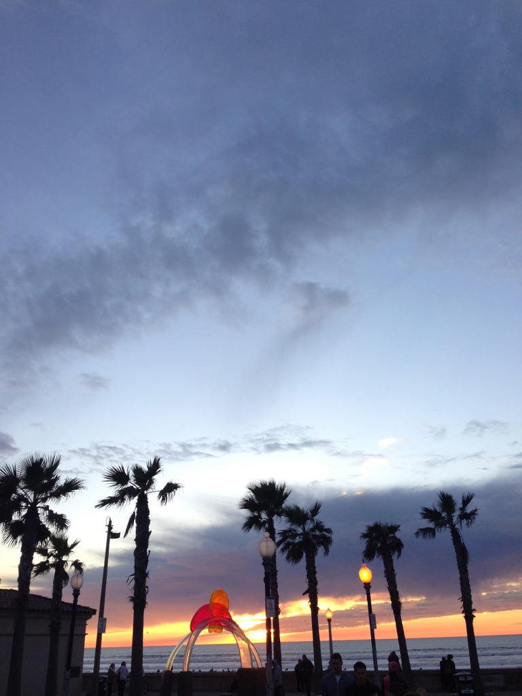

You won't find more beach diversity anywhere.
With 17 miles of coastline and 4,600 acres around Mission Bay Park, San Diego offers a wide variety of beaches and amenities.
According to Wikipedia, "Some beaches in the San Diego area are long continuous stretches of sandy coastline, others, like many of the beaches in the Village of La Jolla (which was built on a large rocky promontory), are small sand beaches within rocky coves or between rocky points. A number of beaches in the San Diego area have cliffs behind them, usually composed of rather soft sandstone; some other beaches front freshwater lagoons where rivers run into the coast."